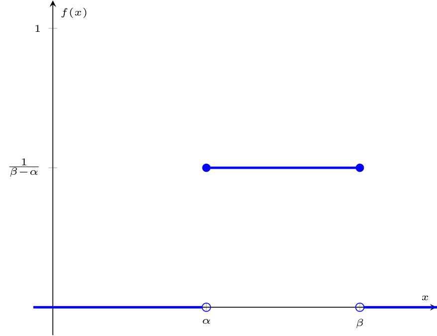
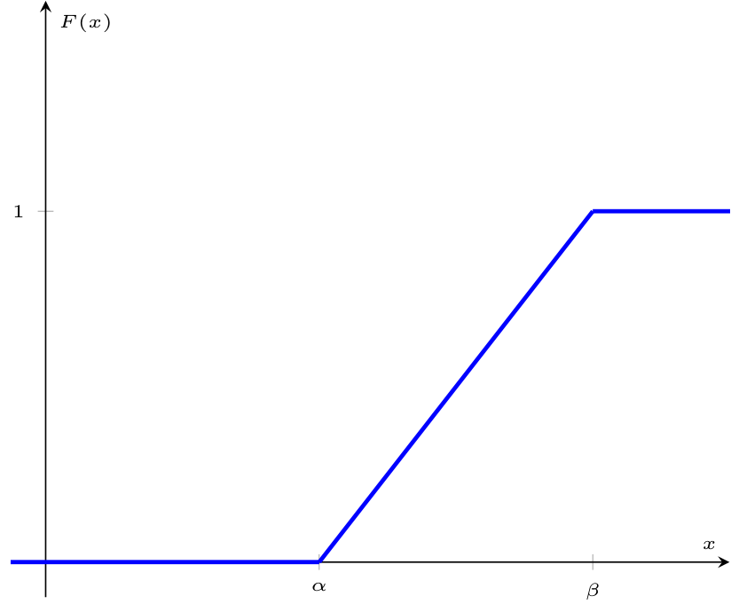
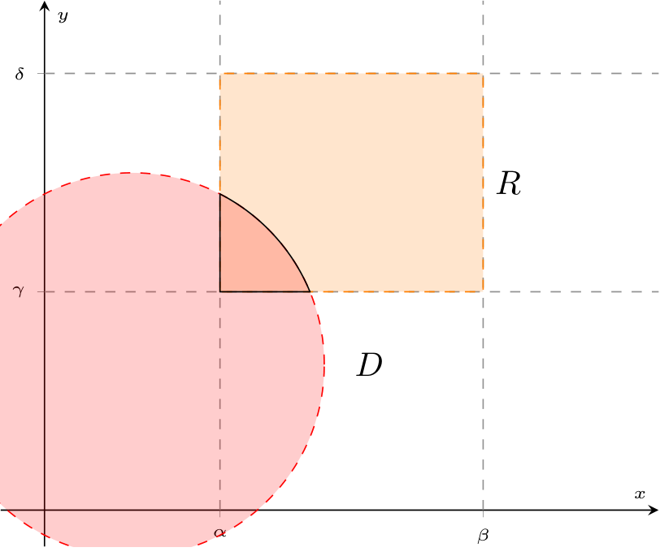
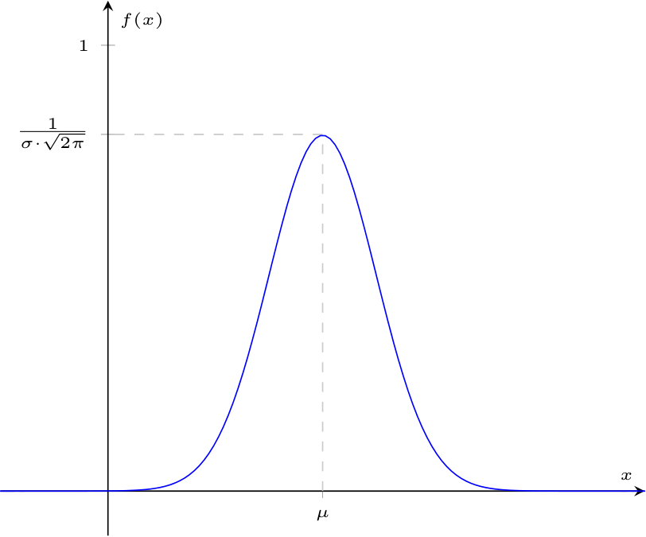
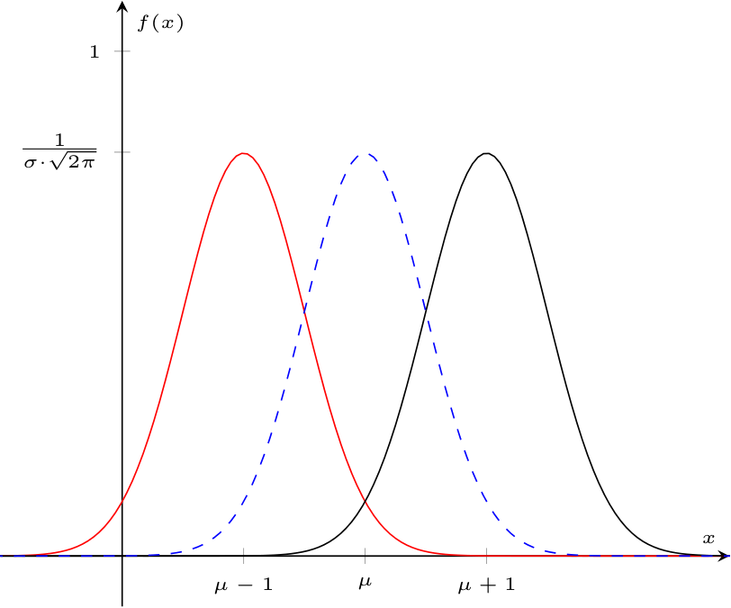
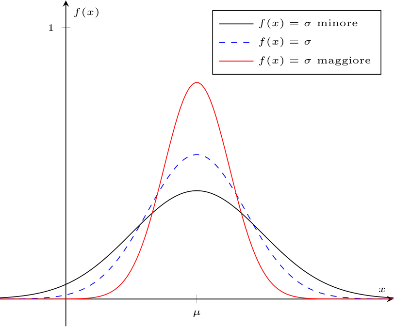
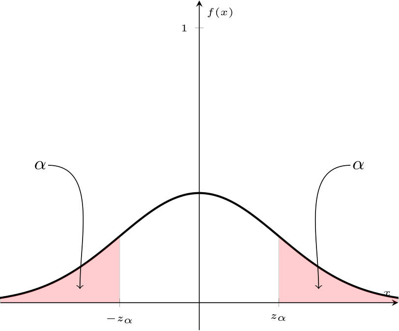

Definizione - Variabile casuale uniforme
Una variabile casuale continua \( X\) si definisce uniforme di parametri \( \alpha\) e \( \beta\) (\( X \sim U(\alpha, \beta)\) con \( \alpha, \beta \in \mathbb{R}\) e \( \alpha \lt \beta\)) se, in un certo intervallo \( [\alpha, \beta]\) essa assume lo stesso valore di probabilità \( k\) e \( 0\) altrove, ovvero si ha che la funzione di densità sarà uguale a \[ f(x) = \left\{ \begin{array}{ll} k & \text{se} \ x \in [\alpha, \beta] \\ 0 & \text{altrove} \end{array} \right. \] Affinchè \( f\) sia una funzione di densità valida, si ha che \( P(X \in [c, d])\), con \( [c, d] \subseteq [\alpha, \beta]\) Considerando un intervallo \( [c, d]\) sottoinsieme di \( [\alpha, \beta]\), si ha che la probabilità di \( X \in [c,d]\) sarà uguale a \[ \begin{array}{ccl} P(X \in [c, d]) & = & \int_c^d f(x) \ dx \\ & = & \int_c^d \frac{1}{\beta - \alpha} \ dx \\ & = & \frac{1}{\beta - \alpha} \cdot (d - c) \\ & = & \frac{d - c}{\beta - \alpha} \\ \end{array} \] ovvero si ha che è dato dal rapporto tra la lunghezza di \( [c,d]\) e \( [\alpha, \beta]\). Valore atteso Il valore atteso di una v. c. uniforme di parametri \( \alpha\) e \( \beta\) è uguale a \[ \begin{array}{ccl} E[X] & = & \int_{-\infty}^{+\infty} x \cdot f(x) \ dx \\ & = & \int_{\alpha}^{\beta} x \cdot \frac{1}{\beta - \alpha} \ dx \\ & = & \frac{1}{\beta - \alpha} \cdot \left[ \frac{x^2}{2} \right]^\beta_\alpha \\ & = & \frac{\beta^2 - \alpha^2}{2 \cdot (\beta - \alpha)} \\ & = & \frac{\beta + \alpha}{2} \end{array} \] Varianza La varianza di una v. c. uniforme di parametri \( \alpha\) e \( \beta\) è calcolabile come \[ Var(X) = E\left[X^2\right] - \left( E[X] \right)^2 \] È necessario calcolare quindi \( E\left[X^2\right]\) che è uguale a \[ \begin{array}{ccl} E\left[X^2\right] & = & \int_{-\infty}^{+\infty} x^2 \cdot f(x) \ dx \\ & = & \int_\alpha^\beta \frac{x^2}{\beta - \alpha} \ dx \\ & = & \frac{1}{\beta - \alpha} \cdot \left[ \frac{x^3}{3} \right]^\beta_\alpha \\ & = & \frac{1}{\beta - \alpha} \cdot \frac{\beta^3 - \alpha^3}{3} \\ & = & \frac{\beta^3 - \alpha^3}{3 \cdot (\beta - \alpha)} \\ & = & \frac{(\beta - \alpha) \cdot (\alpha^2 + \beta^2 + \alpha \cdot \beta)}{3 \cdot (\beta - \alpha)} \\ & = & \frac{\alpha^2 + \beta^2 + \alpha \cdot \beta}{3} \end{array} \] È ora possibile calcolare la varianza, ovvero \[ \begin{array}{ccl} Var(X) & = & E\left[X^2\right] - \left( E[X] \right)^2 \\ & = & \frac{\alpha^2 + \beta^2 + \alpha \cdot \beta}{3} - \left( \frac{\beta + \alpha}{2} \right)^2 \\ & = & \frac{\alpha^2 + \beta^2 + \alpha \cdot \beta}{3} - \frac{\beta^2 + \alpha^2 + 2 \cdot \alpha \cdot \beta}{4} \\ & = & \frac{\alpha^2 + \beta^2 - 2 \cdot \alpha \cdot \beta }{12} \\ & = & \frac{(\beta - \alpha)^2}{12} \end{array} \] Funzione di ripartizione La funzione di ripartizione per una v. c. uniforme di parametri \( \alpha\) e \( \beta\) è calcolabile come \[ \begin{array}{ccl} F(a) & = & P(X \leq a) \\ & = & \int_{-\infty}^a f(x) \ dx \\ & = & \left\{ \begin{array}{ll} \int_{-\infty}^a 0 \ dx & \text{se} \ a \lt \alpha \\ \int_{-\infty}^\alpha 0 \ dx + \int_{\alpha}^a \frac{1}{\beta - \alpha} \ dx & \text{se} \ \alpha \leq a \leq \beta \\ \int_{-\infty}^\alpha 0 \ dx + \int_{\alpha}^{\beta} \frac{1}{\beta - \alpha} \ dx + \int_{\beta}^{a} 0 \ dx & \text{se} \ a \gt \beta \end{array} \right. \\ & = & \left\{ \begin{array}{ll} 0 & \text{se} \ a \lt \alpha \\ \frac{a - \alpha}{\beta - \alpha} \ dx & \text{se} \ \alpha \leq a \leq \beta \\ 1 & \text{se} \ a \gt \beta \end{array} \right. \end{array} \]
- \( f(x) \geq 0\) per ogni \( x \in \mathbb{R}\), e ciò implica che \[ k \geq 0 \]
- considerando \( \mathbb{R}\), si ha che \[ \int_{-\infty}^{+\infty} f(x) \ dx = 1 \] che implica \begin{aligned} & \int_{-\infty}^{\alpha} 0 \ dx + \int_\alpha^\beta k \ dx + \int_\beta^{+\infty} 0 \ dx = 1 & \iff \\ & k \cdot (\beta - \alpha) = 1 & \iff \\ & k = \frac{1}{\beta - \alpha} \end{aligned}


Esempio - Utilizzo di una v. c. uniforme
Considerando un autobus che passa in un istante casuale tra le 6:50 AM e le 7:20 AM, calcolare
- la probabilità che l'autobus passi dalle 7:00 AM in poi;
- la probabilità che l'autobus passi dalle 7:05 AM in poi;
- la probabilità che l'autobus passi alle 7:00 AM.
Definizione - Problemi sulla probabilità che un sistema in serie e parallelo funzioni fino ad un istante \( a\)
Utilizzando le variabili casuali continue, è possibile descrivere meglio il funzionamento di dispositivi in serie ed in parallelo, descrivendo la probabilità di funzionamento fino ad un certo istante. Dispositivi in serie Nel caso di \( n\) dispositivi in serie, caratterizzati da \( n\) variabili casuali continue che descrivono la probabilità di funzionamento allo scorrere del tempo \( X_1, \ldots, X_n\)
si ha che il sistema funziona fino a quando ogni dispositivo funziona, ovvero si ha che \[ T = \text{"Tempo di funzionamento del sistema"} \] è uguale al minimo tra tutti i tempi di funzionamento, ovvero \[ T = min(X_1, \ldots, X_n) \] Si avrà quindi che la probabilità che il sistema funzioni fino ad un istante \( a\) è data dalla funzione \begin{aligned} & P(T \leq a) = P(min(X_1, \ldots, X_n) \leq a) & \iff \end{aligned} Ora, è possibile quindi considerare tale relazione in funzione del complementare della probabilità, ovvero \begin{aligned} & P(T \leq a) = 1 - P(min(X_1, \ldots, X_n) \gt a) & \iff \end{aligned} Ora, il fatto che il minimo tra i tempi è maggiore di \( a\) implica che ogni tempo sia maggiore di \( a\), ovvero \begin{aligned} & P(T \leq a) = 1 - P(X_1 \gt a \ \cap \ \ldots \ \cap \ X_n \gt a) & \iff \end{aligned} e data l'indipendenza del funzionamento dei dispositivi \begin{aligned} & P(T \leq a) = 1 - P(X_1 \gt a) \cdot \ldots \cdot P(X_n \gt a) & \end{aligned} che è decisamente pià semplice da calcolare. Dispositivi in parallelo Nel caso si abbiano invece \( n\) dispositivi in parallelo caratterizzati da \( n\) variabili casuali continue che descrivono la probabilità di funzionamento allo scorrere del tempo \( X_1, \ldots, X_n\)
si ha che il sistema funziona fino a quando anche solo uno dei dispositivi funziona, ovvero si ha \[ T = \text{"Tempo di funzionamento del sistema"} \] è uguale al massimo tra tutti i tempi di funzionamento, ovvero \[ T = max(X_1, \ldots, X_n) \] Si avrà quindi che la probabilità che il sistema funzioni fino ad un istante \( a\) è data dalla funzione \begin{aligned} & P(T \leq a) = P(max(X_1, \ldots, X_n) \leq a) & \iff \end{aligned} Ora, il fatto che il massima tra i tempi è maggiore o uguale ad \( a\) implica che ogni tempo sia minore o uguale di \( a\), ovvero \begin{aligned} & P(T \leq a) = P(X_1 \leq a \ \cap \ \ldots \ \cap \ X_n \leq a) & \iff \end{aligned} e data l'indipendenza del funzionamento dei dispositivi \begin{aligned} & P(T \leq a) = P(X_1 \leq a) \cdot \ldots \cdot P(X_n \leq a) & \iff \\ & P(T \leq a) = F_{X_1}(a) \cdot \ldots \cdot F_{X_n}(a) & \end{aligned} che è decisamente pià semplice da calcolare.
Definizione - Coppia di variabili casuali uniformi e probabilità di appartenenza ad un sottoinsieme di \( \mathbb{R}^2\)
Considerando due variabili casuali continue uniformi indipendenti tali che \[ X \sim U(\alpha, \beta) \qquad \text{con} \ \alpha, \beta \in \mathbb{R} \ \text{e} \ \alpha \lt \beta \] e \[ Y \sim U(\gamma, \delta) \qquad \text{con} \ \gamma, \delta \in \mathbb{R} \ \text{e} \ \gamma \lt \delta \] è possibile definire l'insieme \( R\), detto anche "rettangolo di definizione di \( (X, Y)\)"  È possibile domandarsi la probabilità che la coppia \( (X, Y)\) appartenga ad un certo insieme \( D\) sottoinsieme di \( \mathbb{R}^2\), graficamente Per calcolare il valore di \( P(X \in D)\), è necessario calcolare \begin{aligned} & P(X \in D) = \underset{D}{\int \int} f(x, y) \ dx \ dy & \iff \end{aligned} Tuttavia, considerando che \( (X, Y)\) appartiene solo a \( R\), si ha che è uguale a \begin{aligned} & P(X \in D) = \underset{D \cap R}{\int \int} f(x, y) \ dx \ dy & \iff \end{aligned} e considerando l'indipendenza delle due variabili casuali, si ha che \begin{aligned} & P(X \in D) = \underset{D \cap R}{\int \int} f_X(x) \cdot f_Y(y) \ dx \ dy & \iff \\ & P(X \in D) = \underset{D \cap R}{\int \int} \frac{1}{\beta - \alpha} \cdot \frac{1}{\delta - \gamma} \ dx \ dy & \iff \\ & P(X \in D) = \frac{1}{\beta - \alpha} \cdot \frac{1}{\delta - \gamma} \cdot \underset{D \cap R}{\int \int} 1 \ dx \ dy & \iff \end{aligned} Ora, considerando che \( \underset{D \cap R}{\int \int} 1 \ dx \ dy\) equivale all'area di \( D \cap R\) e che \( (\beta - \alpha) \cdot (\delta - \gamma)\) è l'area del rettangolo \( R\), si ha che \[ P(X \in D) = \frac{\text{Area di $D \cap R$}}{\text{Area di $R$}} \]
È possibile domandarsi la probabilità che la coppia \( (X, Y)\) appartenga ad un certo insieme \( D\) sottoinsieme di \( \mathbb{R}^2\), graficamente Per calcolare il valore di \( P(X \in D)\), è necessario calcolare \begin{aligned} & P(X \in D) = \underset{D}{\int \int} f(x, y) \ dx \ dy & \iff \end{aligned} Tuttavia, considerando che \( (X, Y)\) appartiene solo a \( R\), si ha che è uguale a \begin{aligned} & P(X \in D) = \underset{D \cap R}{\int \int} f(x, y) \ dx \ dy & \iff \end{aligned} e considerando l'indipendenza delle due variabili casuali, si ha che \begin{aligned} & P(X \in D) = \underset{D \cap R}{\int \int} f_X(x) \cdot f_Y(y) \ dx \ dy & \iff \\ & P(X \in D) = \underset{D \cap R}{\int \int} \frac{1}{\beta - \alpha} \cdot \frac{1}{\delta - \gamma} \ dx \ dy & \iff \\ & P(X \in D) = \frac{1}{\beta - \alpha} \cdot \frac{1}{\delta - \gamma} \cdot \underset{D \cap R}{\int \int} 1 \ dx \ dy & \iff \end{aligned} Ora, considerando che \( \underset{D \cap R}{\int \int} 1 \ dx \ dy\) equivale all'area di \( D \cap R\) e che \( (\beta - \alpha) \cdot (\delta - \gamma)\) è l'area del rettangolo \( R\), si ha che \[ P(X \in D) = \frac{\text{Area di $D \cap R$}}{\text{Area di $R$}} \]

Definizione - Variabile casuale esponenziale
Una variabile casuale continua \( X\) si definisce esponenziale di parametro \( \lambda\) (\( X \sim E(\lambda)\) con \( \lambda \in \mathbb{R}^+\)) se rappresenta il tempo intercorso tra due "eventi rari" che avvengono in maniera indipendente e continua ad un tasso medio di \( \lambda\). Essa è caratterizzata dalla funzione di densità uguale a \[ f(x) = \left\{ \begin{array}{ll} \lambda \cdot \mathrm{e}^{-\lambda \cdot x} & \text{se} \ x \geq 0 \\ 0 & \text{altrove} \end{array} \right. \] Funzione di ripartizione La funzione di ripartizione \( F(a)\) di una variabile casuale esponenziale sarà uguale a \[ \begin{array}{ccl} F(a) & = & \int_{-\infty}^{a} f(x) \ dx \\ & = & \left\{ \begin{array}{ll} \int_{-\infty}^0 0 \ dx + \int_0^a \lambda \cdot \mathrm{e}^{-\lambda \cdot x} \ dx & \text{se} \ a \geq 0 \\ \int_{-\infty}^a 0 \ dx & \text{se} \ a \lt 0 \end{array} \right. \\ & = & \left\{ \begin{array}{ll} \int_0^a \lambda \cdot \mathrm{e}^{-\lambda \cdot x} \ dx & \text{se} \ a \geq 0 \\ 0 & \text{se} \ a \lt 0 \end{array} \right. \end{array} \] che è quindi uguale a \begin{aligned} & = \int_0^a \lambda \cdot \mathrm{e}^{-\lambda \cdot x} \ dx & = \\ & = -1 \cdot \int_0^a -\lambda \cdot \mathrm{e}^{-\lambda \cdot x} \ dx & = \\ & = \left[ \mathrm{e}^{-\lambda \cdot x} \right]^a_0 & = \\ & = - (\mathrm{e}^{-\lambda \cdot a} - 1) & = \\ & = 1 - \mathrm{e}^{-\lambda \cdot a} \end{aligned} Riassumendo si ha che \( F(a) = 1 - \mathrm{e}^{-\lambda \cdot a}\) per \( a \geq 0\). Funzione generatrice dei momenti La funzione generatrice dei momenti di una v. c. esponenziale di parametro \( \lambda\) è uguale a \[ \begin{array}{ccl} \phi(t) & = & E\left[ \mathrm{e}^{t \cdot X} \right] \\ & = & \int_{-\infty}^{+\infty} \mathrm{e}^{t \cdot x} \cdot f(x) \ dx \\ & = & \int_{-\infty}^{0} \mathrm{e}^{t \cdot x} \cdot 0 \ dx + \int_{0}^{+\infty} \mathrm{e}^{t \cdot x} \cdot \lambda \cdot \mathrm{e}^{-\lambda \cdot x} \ dx \\ & = & \lambda \cdot \int_{0}^{+\infty} \mathrm{e}^{t \cdot x} \cdot \mathrm{e}^{-\lambda \cdot x} \ dx \\ & = & \lambda \cdot \int_{0}^{+\infty} \mathrm{e}^{t \cdot x - \lambda \cdot x} \ dx \\ & = & \lambda \cdot \int_{0}^{+\infty} \mathrm{e}^{x \cdot (t - \lambda)} \ dx \\ \end{array} \] da ciò, si ha che se \( t - \lambda \gt 0 \implies t \gt \lambda\) l'integrale diverge mentre se \( t \leq \lambda\) si avrà \[ \begin{array}{ccl} \phi(t) & = & \lambda \cdot \int_{0}^{+\infty} \mathrm{e}^{x \cdot (t - \lambda)} \ dx \\ & = & \lambda \cdot \frac{1}{t - \lambda} \cdot \left[ \mathrm{e}^{x \cdot (t - \lambda)} \right]_0^{+\infty} \\ & = & \frac{\lambda}{t - \lambda} \cdot (0 - 1) \\ & = & \frac{\lambda}{\lambda - t} \end{array} \] Ovvero si ha che \( \phi(t) = \frac{\lambda}{\lambda - t}\) per \( t \leq \lambda\). Valore atteso Il valore atteso per una variabile casuale esponenziale di parametro \( \lambda\) è calcolabile come \[ \begin{array}{ccl} E[X] & = & \frac{\partial}{\partial t} \phi(t) \mid_{t = 0} \\ & = & \frac{\partial}{\partial t} \left( \frac{\lambda}{\lambda - t} \right) \mid_{t = 0} \\ & = & \lambda \cdot \frac{\partial}{\partial t} \left( \lambda - t \right)^{-1} \mid_{t = 0} \\ & = & \lambda \cdot (-1) \cdot (-1) \frac{1}{(\lambda - t)^2} \mid_{t = 0} \\ & = & \frac{\lambda}{(\lambda - t)^2} \mid_{t = 0} \\ & = & \frac{1}{\lambda} \end{array} \] Varianza La varianza di una v. c. esponenziale di parametro \( \lambda\) è calcolabile come \[ Var(X) = E\left[X^2\right] - (E[X])^2 \] È necessario calcolare quindi \( E\left[X^2\right]\) che è uguale a \[ \begin{array}{ccl} E\left[X^2\right] & = & \frac{\partial^2}{\partial^2 t} \phi(t) \mid_{t = 0} \\ & = & \frac{\partial}{\partial t} \left( \frac{\lambda}{(\lambda - t)^2} \right) \mid_{t = 0} \\ & = & \lambda \cdot \frac{\partial}{\partial t} \left( \lambda - t \right)^{-2} \mid_{t = 0} \\ & = & \lambda \cdot (-1) \cdot (-2) \frac{1}{(\lambda - t)^3} \mid_{t = 0} \\ & = & \frac{2 \cdot \lambda}{(\lambda - t)^3} \mid_{t = 0} \\ & = & \frac{2}{\lambda^2} \end{array} \] È ora possibile calcolare la varianza, ovvero \[ \begin{array}{ccl} Var(X) & = & E\left[X^2\right] - (E[X])^2 \\ & = & \frac{2}{\lambda^2} - \frac{1}{\lambda^2} \\ & = & \frac{1}{\lambda^2} \end{array} \]
Definizione - Probabilità di funzionamento di sistemi in serie e parallelo fino ad un istante \( a\) utilizzando v. c. esponenziali
Un sottogruppo di problemi relativi alla probabilità di funzionamento dopo un certo tempo \( a\) è quello di modellare ogni dispositivo con una variabile casuale esponenziale (\( X_i \sim E(\lambda_i)\) per \( i \in \{ 1, \ldots, n\}\)). Dispositivi in serie Considerando un generico caso, avevamo ottenuto che per \( n\) dispositivi in serie la probabilità che il sistema \( T\) funzionasse fino ad un istante \( a\) fosse \[ P(T \leq a) = 1 - P(X_1 \gt a) \cdot \ldots \cdot P(X_n \gt a) \] Considerando ora che stiamo trattando variabili esponenziali la cui funzione di ripartizione è uguale a \[ F_{X_i}(a) = \left\{ \begin{array}{ll} 1 - \mathrm{e}^{-\lambda_i \cdot a} & \text{se} \ a \geq 0 \\ 0 & \text{se} \ a \lt 0 \end{array} \right. \] e che \[ P(X_i \gt a) = 1 - P(X_i \leq a) = 1 - F_{X_i}(a) \] si ha che \[ \begin{array}{ccl} P(T \leq a) & = & 1 - (1 - F_{X_1}(a)) \cdot \ldots \cdot (1 - F_{X_n}(a)) \\ & = & 1 - \left\{ \begin{array}{ll} \mathrm{e}^{-\lambda_1 \cdot a} & \text{se} \ a \geq 0 \\ 1 & \text{se} \ a \lt 0 \end{array} \right. \cdot \ldots \cdot \left\{ \begin{array}{ll} \mathrm{e}^{-\lambda_n \cdot a} & \text{se} \ a \geq 0 \\ 1 & \text{se} \ a \lt 0 \end{array} \right. \\ & = & 1 - \left\{ \begin{array}{ll} \mathrm{e}^{-(\lambda_1 + \ldots + \lambda_n) \cdot a } & \text{se} \ a \geq 0 \\ 1 & \text{se} \ a \lt 0 \end{array} \right. \\ & = & \left\{ \begin{array}{ll} 1 - \mathrm{e}^{-(\lambda_1 + \ldots + \lambda_n) \cdot a } & \text{se} \ a \geq 0 \\ 0 & \text{se} \ a \lt 0 \end{array} \right. \\ \end{array} \] Da cui è possibile dedurre che anche \( T\) è una variabile casuale esponenziale, ovvero \[ T \sim E(\lambda_1 + \ldots + \lambda_n) \] Dispositivi in parallelo Considerando un generico caso, avevamo ottenuto che per \( n\) dispositivi in parallelo la probabilità che il sistema \( T\) funzionasse fino ad un istante \( a\) fosse \[ P(T \leq a) = F_{X_1}(a) \cdot \ldots \cdot F_{X_n}(a) \] Considerando ora che stiamo trattando variabili esponenziali la cui funzione di ripartizione è uguale a \[ F_{X_i}(a) = \left\{ \begin{array}{ll} 1 - \mathrm{e}^{-\lambda_i \cdot a} & \text{se} \ a \geq 0 \\ 0 & \text{se} \ a \lt 0 \end{array} \right. \] si ha che \[ \begin{array}{ccl} P(T \leq a) & = & F_{X_1}(a) \cdot \ldots \cdot F_{X_n}(a) \\ & = & \left\{ \begin{array}{ll} 1 - \mathrm{e}^{-\lambda_1 \cdot a} & \text{se} \ a \geq 0 \\ 0 & \text{se} \ a \lt 0 \end{array} \right. \cdot \ldots \cdot \left\{ \begin{array}{ll} 1 - \mathrm{e}^{-\lambda_n \cdot a} & \text{se} \ a \geq 0 \\ 0 & \text{se} \ a \lt 0 \end{array} \right. \\ & = & \left\{ \begin{array}{ll} \prod_{k = 1}^n \left( 1 - \mathrm{e}^{-\lambda_k \cdot a } \right) & \text{se} \ a \geq 0 \\ 0 & \text{se} \ a \lt 0 \end{array} \right. \\ \end{array} \]
Dimostrazione - Variabile casuale esponenziale moltiplicata per uno scalare
Data la proposizione
Enunciato:
Considerando una v. c. esponenziale \( X \sim E(\lambda)\), se \( Y = c \cdot X\) (con \( c \in \mathbb{R}^+\)), si ha che \( Y \sim E(\frac{\lambda}{c})\).
Dimostrazione:
Per dimostrare questa proposizione consideriamo di calcolare la funzione generatrice dei momenti di \( Y\), ovvero \[ \begin{array}{ccl} \phi_Y(t) & = & E[\mathrm{e^{t \cdot Y}}] \\ & \underset{Y = c \cdot X}{=} & E[\mathrm{e^{t \cdot c \cdot X}}] \end{array} \] Dato ciò, è ora possibile considerare tale funzione come la funzione generatrice dei momenti di \( X\) in \( t \cdot c\), ovvero \[ \begin{array}{ccl} \phi_Y(t) & = & E[\mathrm{e^{t \cdot c \cdot X}}] \\ & = & \phi_X(t \cdot c) \end{array} \] Si ha tuttavia che conosciamo \( \phi_X(t) = \frac{\lambda}{\lambda - t}\) (in quanto è una v. c. esponenziale), per cui sappiamo che \[ \begin{array}{ccl} \phi_Y(t) & = & \phi_X(t \cdot c) \\ & = & \frac{\lambda}{\lambda - t \cdot c} \\ & = & \frac{\lambda}{\lambda - t \cdot c} \cdot \frac{\frac{1}{c}}{\frac{1}{c}} \\ & = & \frac{\frac{\lambda}{c}}{\frac{\lambda - t \cdot c}{c}} \\ & = & \frac{\frac{\lambda}{c}}{\frac{\lambda}{c} - t} \end{array} \] che è esattamente la funzione generatrice di una variabile esponenziale di parametro \( \frac{\lambda}{c}\). Si è quindi dimostrata la proposizione.
Dimostrazione - Mancanza di memoria per variabili casuali esponenziali
Data la proposizione
Enunciato:
Considerando una variabile casuale \( X \sim E(\lambda)\), si ha che è caratterizzata dalla "mancanza della memoria", ovvero si ha che considerando \( a, b \in \mathbb{R}^+\) vale \[ P(X \gt a + b \mid X \gt a) = P(x \gt b) \]
Dimostrazione:
Per dimostrare questa proposizione, consideriamo la definizione di probabilità condizionata \begin{aligned} & P(X \gt a + b \mid X \gt a) = \frac{P(X \gt a + b \cap X \gt a)}{P(X \gt a)} & \iff \end{aligned} Dato ciò, si ha che l'intersezione degli eventi \( X \gt a + b\) e \( X \gt a\) avviene quando \( X \gt a + b\), ovvero \begin{aligned} & P(X \gt a + b \mid X \gt a) = \frac{P(X \gt a + b)}{P(X \gt a)} & \iff \end{aligned} e, dato ciò, è possibile considerare che \[ P(X \gt a + b) = 1 - P(X \leq a + b) = 1 - F(a + b) \] e, considerando la funzione di ripartizione di una v. c. esponenziale, ovvero \[ F(a) = 1 - \mathrm{e}^{-\lambda \cdot a} \] si ha che è possibile sostituire all'uguaglianza precedente i valori \begin{aligned} & P(X \gt a + b \mid X \gt a) = \frac{ 1 - 1 + \mathrm{e}^{-\lambda \cdot (a + b)}}{1 - 1 + \mathrm{e}^{-\lambda \cdot a}} & \iff \\ & P(X \gt a + b \mid X \gt a) = \frac{ \mathrm{e}^{-\lambda \cdot a} \cdot \mathrm{e}^{-\lambda \cdot b}}{\mathrm{e}^{-\lambda \cdot a}} & \iff \\ & P(X \gt a + b \mid X \gt a) = \mathrm{e}^{-\lambda \cdot b} & \iff \\ & P(X \gt a + b \mid X \gt a) = P(x \gt b) & \end{aligned} che dimostra la proposizione.
Definizione - Variabile casuale gaussiana (o normale)
Una variabile casuale continua \( X\) si definisce gaussiana (o normale) di parametri \( \mu\) e \( \sigma\) (\( X \sim N(\mu, \sigma)\)) se è ha valore atteso \( \mu\) (con \( \mu \in \mathbb{R}\)) e deviazione standard \( \sigma\) (con \( \sigma \in \mathbb{R}^+\)) ed è caratterizzata dalla funzione di densità \[ f(x) = \frac{1}{\sigma \cdot \sqrt{2 \pi}} \cdot \mathrm{e}^{-\frac{(x - \mu)^2}{2\sigma^2}} \] Funzione generatrice dei momenti La funzione generatrice dei momenti di una variabile casuale gaussiana di parametri \( \mu\) e \( \sigma\) è uguale a \[ \begin{array}{ccl} \phi(t) & = & E\left[\mathrm{e}^{t \cdot X}\right] \\ & = & \int_{-\infty}^{+\infty} \mathrm{e}^{t \cdot x} \cdot f(x) \ dx \\ & = & \int_{-\infty}^{+\infty} \mathrm{e}^{t \cdot x} \cdot \frac{1}{\sigma \cdot \sqrt{2 \pi}} \cdot \mathrm{e}^{-\frac{(x - \mu)^2}{2\sigma}} \ dx \\ \end{array} \] considerando ora \[ z = \frac{x - \mu}{\sigma} \] che implica \begin{aligned} & x = z \cdot \sigma + \mu & \\ & dx = \underbrace{\ \sigma \ dz \ }_{\frac{d}{dz} (z \cdot \sigma + \mu) \ dz } & \end{aligned} si ha che \[ \begin{array}{ccl} \phi(t) & = & \int_{-\infty}^{+\infty} \mathrm{e}^{t \cdot x} \cdot \frac{1}{\sigma \cdot \sqrt{2 \pi}} \cdot \mathrm{e}^{-\frac{(x - \mu)^2}{2\sigma^2}} \ dx \\ & = & \int_{-\infty}^{+\infty} \mathrm{e}^{t \cdot (z \cdot \sigma + \mu)} \cdot \frac{1}{\sigma \cdot \sqrt{2 \pi}} \cdot \mathrm{e}^{-\frac{z^2}{2}} \cdot \sigma \ dz \\ & = & \int_{-\infty}^{+\infty} \mathrm{e}^{t \cdot (z \cdot \sigma + \mu)} \cdot \frac{1}{\sqrt{2 \pi}} \cdot \mathrm{e}^{-\frac{z^2}{2}}\ dz \\ & = & \frac{1}{\sqrt{2 \pi}} \cdot \int_{-\infty}^{+\infty} \mathrm{e}^{t \cdot (z \cdot \sigma + \mu)} \cdot \mathrm{e}^{-\frac{z^2}{2}}\ dz \\ & = & \frac{1}{\sqrt{2 \pi}} \cdot \int_{-\infty}^{+\infty} \mathrm{e}^{t \cdot (z \cdot \sigma)} \cdot \mathrm{e}^{t \cdot \mu} \cdot \mathrm{e}^{-\frac{z^2}{2}}\ dz \\ & = & \frac{\mathrm{e}^{t \cdot \mu}}{\sqrt{2 \pi}} \cdot \int_{-\infty}^{+\infty} \mathrm{e}^{t \cdot (z \cdot \sigma) - \frac{z^2}{2}}\ dz \\ & = & \frac{\mathrm{e}^{t \cdot \mu}}{\sqrt{2 \pi}} \cdot \int_{-\infty}^{+\infty} \mathrm{e}^{\frac{2 \cdot t \cdot z \cdot \sigma - z^2}{2}}\ dz \\ \end{array} \] Moltiplicando per \( 1 = \mathrm{e}^{\frac{t^2 \cdot \sigma^2 - t^2 \cdot \sigma^2}{2}}\), si ottiene \[ \begin{array}{ccl} \phi(t) & = & \frac{\mathrm{e}^{t \cdot \mu}}{\sqrt{2 \pi}} \cdot \int_{-\infty}^{+\infty} \mathrm{e}^{\frac{2 \cdot t \cdot z \cdot \sigma - z^2}{2}}\ dz \\ & = & \frac{\mathrm{e}^{t \cdot \mu}}{\sqrt{2 \pi}} \cdot \int_{-\infty}^{+\infty} \mathrm{e}^{\frac{2 \cdot t \cdot z \cdot \sigma - z^2}{2}} \cdot \mathrm{e}^{\frac{t^2 \cdot \sigma^2 - t^2 \cdot \sigma^2}{2}} \ dz \\ & = & \frac{\mathrm{e}^{t \cdot \mu}}{\sqrt{2 \pi}} \cdot \int_{-\infty}^{+\infty} \mathrm{e}^{\frac{2 \cdot t \cdot z \cdot \sigma - z^2 - \cdot t^2 \cdot \sigma^2}{2}} \cdot \mathrm{e}^{\frac{t^2 \cdot \sigma^2}{2}} \ dz \\ & = & \frac{\mathrm{e}^{t \cdot \mu}}{\sqrt{2 \pi}} \cdot \mathrm{e}^{\frac{t^2 \cdot \sigma^2}{2}} \cdot \int_{-\infty}^{+\infty} \mathrm{e}^{-\frac{-2 \cdot t \cdot z \cdot \sigma + z^2 + t^2 \cdot \sigma^2}{2}} \ dz \\ & = & \frac{\mathrm{e}^{t \cdot \mu}}{\sqrt{2 \pi}} \cdot \mathrm{e}^{\frac{t^2 \cdot \sigma^2}{2}} \cdot \int_{-\infty}^{+\infty} \mathrm{e}^{-\frac{(z - t \cdot \sigma)^2}{2}} \ dz \end{array} \] Consideriamo ora \[ y = z - t \cdot \sigma \] che implica \begin{aligned} & z = y + t \cdot \sigma & \\ & dz = \underbrace{\ 1 \ dy \ }_{\frac{d}{dy} (y + t \cdot \sigma) \ dy } & \end{aligned} si otterrà \[ \begin{array}{ccl} \phi(t) & = & \frac{\mathrm{e}^{t \cdot \mu}}{\sqrt{2 \pi}} \cdot \mathrm{e}^{\frac{t^2 \cdot \sigma^2}{2}} \cdot \int_{-\infty}^{+\infty} \mathrm{e}^{-\frac{(z - t \cdot \sigma)^2}{2}} \ dz \\ & = & \frac{\mathrm{e}^{t \cdot \mu}}{\sqrt{2 \pi}} \cdot \mathrm{e}^{\frac{t^2 \cdot \sigma^2}{2}} \cdot \int_{-\infty}^{+\infty} \mathrm{e}^{-\frac{y^2}{2}} \ dy \end{array} \] Ora, dato che \[ \int_{-\infty}^{+\infty} \mathrm{e}^{-\frac{y^2}{2}} \ dy = \sqrt{2 \pi} \] in quanto integrale notevole, è possibile calcolare \[ \begin{array}{ccl} \phi(t) & = & \frac{\mathrm{e}^{t \cdot \mu}}{\sqrt{2 \pi}} \cdot \mathrm{e}^{\frac{t^2 \cdot \sigma^2}{2}} \cdot \sqrt{2 \pi} \\ & = & \mathrm{e}^{t \cdot \mu} \cdot \mathrm{e}^{\frac{t^2 \cdot \sigma^2}{2}} \\ & = & \mathrm{e}^{t \cdot \mu + \frac{t^2 \cdot \sigma^2}{2}} \end{array} \] ovvero si ha che \( \phi(t) = \mathrm{e}^{t \cdot \mu + \frac{t^2 \cdot \sigma^2}{2}}\). Valore atteso Il valore atteso di una variabile casuale gaussiana di parametri \( \mu\) e \( \sigma\) è calcolabile come \[ \begin{array}{ccl} E[X] & = & \frac{\partial}{\partial t} \phi(t) \mid_{t = 0} \\ & = & \frac{\partial}{\partial t} \left( \mathrm{e}^{t \cdot \mu + \frac{t^2 \cdot \sigma^2}{2}} \right) \mid_{t = 0} \\ & = & ( \mu + \frac{1}{2} \cdot 2t \cdot \sigma^2) \cdot \mathrm{e}^{t \cdot \mu + \frac{t^2 \cdot \sigma^2}{2}} \mid_{t = 0} \\ & = & ( \mu + t \cdot \sigma^2) \cdot \mathrm{e}^{t \cdot \mu + \frac{t^2 \cdot \sigma^2}{2}} \mid_{t = 0} \\ & = & \mu \end{array} \] Varianza La varianza di una v. c. gaussiana di parametri \( \mu\) e \( \sigma\) è calcolabile come \[ Var(X) = E\left[X^2\right] - (E[X])^2 \] È necessario calcolare quindi \( E\left[X^2\right]\) che è uguale a \[ \begin{array}{ccl} E\left[X^2\right] & = & \frac{\partial^2}{\partial^2 t} \phi(t) \mid_{t = 0} \\ & = & \frac{\partial}{\partial t} \left( (\mu + t \cdot \sigma^2) \cdot \mathrm{e}^{t \cdot \mu + \frac{t^2 \cdot \sigma^2}{2}} \right) \mid_{t = 0} \\ & = & \sigma^2 \cdot \mathrm{e}^{t \cdot \mu + \frac{t^2 \cdot \sigma^2}{2}} + (\mu + t \cdot \sigma^2)^2 \cdot \mathrm{e}^{t \cdot \mu + \frac{t^2 \cdot \sigma^2}{2}} \\ & = & \lambda \cdot (-1) \cdot (-2) \frac{1}{(\lambda - t)^3} \mid_{t = 0} \\ & = & \sigma^2 + \mu^2 \end{array} \] È ora possibile calcolare la varianza, ovvero \[ \begin{array}{ccl} Var(X) & = & E\left[X^2\right] - (E[X])^2 \\ & = & \sigma^2 + \mu^2 - \mu^2 \\ & = & \sigma^2 \end{array} \] Effetto della variazione dei parametri sulla funzione di densità Considerando la funzione di densità si ha che è caratterizzata dal massimo in corrispondenza del valore atteso \( \mu\), punto in cui ha probabilità \( \frac{1}{\sigma \cdot \sqrt{2 \pi}}\) e punto in cui è la funzione è simmetrica.
Al variare di \( \mu\) (considerando fisso \( \sigma\)), si ottiene una traslazione orizzontale rigida della curva, ovvero Al variare invece di \( \sigma\) (considerando fisso \( \mu\)), si ottiene un cambiamento sul valore del picco (in modo inversamente proporzionale, ovvero al crescere di \( \sigma\) il valore del picco diminuisce e viceversa), ovvero Funzione di ripartizione La funzione di ripartizione di probabilità per una variabile gaussiana di parametri \( \mu\) e \( \sigma\) sarebbe calcolabile come \[ \begin{array}{ccl} F(a) & = & P(X \leq a) \\ & = & \int_{-\infty}^a f(x) \ dx \\ & = & \int_{-\infty}^a \frac{1}{\sigma \cdot \sqrt{2 \pi}} \cdot \mathrm{e}^{-\frac{(x - \mu)^2}{2\sigma^2}} \ dx \\ \end{array} \] che è un integrale convergente, ma che tuttavia non presenta una primitiva esprimibile analiticamente. Per effettuare i calcoli, è quindi necessario utilizzare apposite tabelle.

Al variare di \( \mu\) (considerando fisso \( \sigma\)), si ottiene una traslazione orizzontale rigida della curva, ovvero


Dimostrazione - Trasformazione lineare di una v. c. gaussiana
Data la proposizione
Enunciato:
Considerando una variabile causale gaussiana \( X\) di parametri \( \mu\) e \( \sigma\) (ovvero \( X \sim N(\mu, \sigma)\)), allora considerando la variabile casuale \( Y = \alpha \cdot X + \beta\), si avrà che \( Y\) è una v. c. gaussiana di parametri \( \alpha \cdot \mu + \beta\) e \( \left| \alpha \right| \cdot \sigma\), ovvero \[ Y \sim N(\alpha \cdot \mu + \beta, \left| \alpha \right| \cdot \sigma) \]
Dimostrazione:
Per dimostrare questa proposizione, calcoliamo la funzione generatrice dei momenti di \( Y\), ovvero \[ \begin{array}{ccl} \phi_Y(t) & = & E\left[ \mathrm{e}^{t \cdot Y} \right] \\ & = & E\left[ \mathrm{e}^{t \cdot (\alpha \cdot X + \beta)} \right] \\ & = & E\left[ \mathrm{e}^{t \alpha \cdot X + t \cdot \beta} \right] \\ & = & \mathrm{e}^{t \cdot \beta} \cdot \underbrace{E\left[ \mathrm{e}^{t \alpha \cdot X} \right]}_{\phi_X(\alpha \cdot t)} \\ & = & \mathrm{e}^{t \cdot \beta} \cdot \phi_X(\alpha \cdot t) \end{array} \] Tuttavia, si ha che conosciamo già la funzione generatrice di \( X\) ovvero \[ \phi_X(t) = \mathrm{e}^{t \cdot \mu + \frac{t^2 \cdot \sigma^2}{2}} \] e sostituendo è possibile ottenere \[ \begin{array}{ccl} \phi_Y(t) & = & \mathrm{e}^{t \cdot \beta} \cdot \phi_X(\alpha \cdot t) \\ & = & \mathrm{e}^{t \cdot \beta} \cdot \mathrm{e}^{(\alpha \cdot t) \cdot \mu + \frac{(\alpha \cdot t)^2 \cdot \sigma^2}{2}} \\ & = & \mathrm{e}^{(\alpha \cdot t) \cdot \mu + \frac{(\alpha \cdot t)^2 \cdot \sigma^2}{2} + t \cdot \beta} \\ & = & \mathrm{e}^{t \cdot (\alpha \mu + \beta) + \frac{t^2 \cdot (\alpha^2 \sigma^2)}{2}} \end{array} \] che è esattamente la funzione generatrice di una variabile casuale gaussiana di parametri \( \alpha \cdot \mu + \beta\) e \( \mid \alpha \mid \cdot \sigma\), dimostrando la proposizione.
Definizione - Variabile casuale gaussiana standard
Una variabile causale gaussiana si definisce standard se è di parametri \( 0\) e \( 1\), ovvero \[ X \sim N(0, 1) \] Ricondurre una qualsiasi v. c. gaussiana alla v. c. gaussiana standard Consideriamo una variabile casuale gaussiana \[ X \sim N(\mu, \sigma) \] e consideriamo la variabile casuale \( Z\) \[ Z = \frac{X - \mu}{\sigma} = \frac{1}{\sigma} \cdot X - \frac{\mu}{\sigma} \] Considerando quindi la proprietà di una trasformazione lineare di una v. c. gaussiana, si ha che anche \( Z\) è una v. c. gaussiana (con \( \alpha = \frac{1}{\sigma}\) e \( \beta = -\frac{\mu}{\sigma}\)) ovvero \[ Z \sim N\left(\frac{\mu}{\sigma} - \frac{\mu}{\sigma}, \left| \frac{1}{\sigma} \right| \cdot \sigma \right) \] ed eseguendo i calcoli si ottiene \[ Z \sim N(0, 1) \]
Definizione - Utilizzare la funzione di ripartizione di una v. c. gaussiana standard per il calcolo della funzione di ripartizione di una qualsiasi v. c. gaussiana
Consideriamo tuttavia \( X \sim N(\mu, \sigma)\) e si ha che la sua funzione di ripartizione è uguale a \begin{aligned} & F_X(a) = P(X \leq a) & \iff \end{aligned} e sottraendo da entrambe le parti \( \mu\) si ottiene \begin{aligned} & F_X(a) = P(X - \mu \leq a - \mu) & \iff \end{aligned} e dividendo per \( \sigma\) \begin{aligned} & F_X(a) = P\left(\frac{X - \mu}{\sigma} \leq \frac{a - \mu}{\sigma} \right) & \iff \end{aligned} Ora, considerando la sostituzione di una qualsiasi v. c. gaussiana con la v. c. gaussiana standard, si ha che \( \frac{X - \mu}{\sigma} = Z \sim N(0, 1)\), ovvero \begin{aligned} & F_X(a) = P\left(Z \leq \frac{a - \mu}{\sigma} \right) & \iff \\ & F_X(a) = F_Z\left(\frac{a - \mu}{\sigma} \right) & \end{aligned} ovvero è possibile ricondursi alla funzione di ripartizione della v. c. gaussiana standard considerando qualsiasi v. c. gaussiana.
Nota bene - Why?
Tale metodo è utile in quanto è possibile calcolare il valore della funzione di ripartizione in un qualsiasi punto per una qualsiasi variabile casuale gaussiana avendo tuttavia sottomano solamente i valori della funzione di ripartizione della gaussiana standard.
Esempio - Utilizzo della funzione di ripartizione per v. c. gaussiane standard
Per trasmettere un messaggio binario (ovvero le cifre \( 0\) o \( 1\)) tramite un filo elettrico, si invia un segnale di \( 2 \mathrm{ \, Volt }\) per indicare la cifra \( 1\) e di \( -2 \mathrm{ \, Volt }\) per indicare la cifra \( 0\). A causa di disturbi sul canale, se la sorgente invia il segnale \( x\) (con \( x \in \{ -2, 2 \}\)) \( \mathrm{ \, Volt }\), il destinatario riceve il segnale \( R = x + N \mathrm{ \, Volt }\) con \( N \sim N(0, 1)\). Alla ricezione del segnale si avrà che il messaggio sarà interpretato come \( 1\) se \( R \geq 0.5 \mathrm{ \, Volt }\), altrimenti se \( R \lt 0.5 \mathrm{ \, Volt }\) sarà interpretato come \( 0\).
Considerando che la funzione di ripartizione di una v. c. gaussiana standard in \( -1.5\) è uguale a \[ F(-1.5) = 0.0668 \] e in \( 2.5\) è uguale a \[ F(2.5) = 0.9938 \] determinare la probabilità che sia decodificato \( 0\) se si è inviato \( 1\) e viceversa. Probabilità di decodificare \( 0\) se si è inviato \( 1\) Per calcolare ciò, consideriamo che vogliamo calcolare la probabilità dell'evento \[ P(R \lt 0.5 \mid x = 2) \] ovvero la probabilità di ricevere \( R \lt 0.5\) dato che si è inviato \( x = 2\).
Considerando ciò, si ha che calcolare tale probabilità è uguale a calcolare \begin{aligned} & P(R \lt 0.5 \mid x = 2) & \iff \\ & P(x + N \lt 0.5 \mid x = 2) & \iff \\ & P(2 + N \lt 0.5) & \iff \\ & P(N \lt -1.5) = 0.0668 & \end{aligned} Probabilità di decodificare \( 1\) se si è inviato \( 0\) Per calcolare ciò, consideriamo che vogliamo calcolare la probabilità dell'evento \[ P(R \geq 0.5 \mid x = -2) \] ovvero la probabilità di ricevere \( R \geq 0.5\) dato che si è inviato \( x = -2\).
Considerando ciò, si ha che calcolare tale probabilità è uguale a calcolare \begin{aligned} & P(R \geq 0.5 \mid x = -2) & \iff \\ & 1 - P(R \lt 0.5 \mid x = -2) & \iff \\ & 1 - P(x + N \lt 0.5 \mid x = -2) & \iff \\ & 1 - P(-2 + N \lt 0.5) & \iff \\ & 1 - P(N \lt 2.5) & \iff \\ & 1 - P(N \lt 2.5) = 1 - 0.9938 = 0.0062 & \end{aligned}
Considerando che la funzione di ripartizione di una v. c. gaussiana standard in \( -1.5\) è uguale a \[ F(-1.5) = 0.0668 \] e in \( 2.5\) è uguale a \[ F(2.5) = 0.9938 \] determinare la probabilità che sia decodificato \( 0\) se si è inviato \( 1\) e viceversa. Probabilità di decodificare \( 0\) se si è inviato \( 1\) Per calcolare ciò, consideriamo che vogliamo calcolare la probabilità dell'evento \[ P(R \lt 0.5 \mid x = 2) \] ovvero la probabilità di ricevere \( R \lt 0.5\) dato che si è inviato \( x = 2\).
Considerando ciò, si ha che calcolare tale probabilità è uguale a calcolare \begin{aligned} & P(R \lt 0.5 \mid x = 2) & \iff \\ & P(x + N \lt 0.5 \mid x = 2) & \iff \\ & P(2 + N \lt 0.5) & \iff \\ & P(N \lt -1.5) = 0.0668 & \end{aligned} Probabilità di decodificare \( 1\) se si è inviato \( 0\) Per calcolare ciò, consideriamo che vogliamo calcolare la probabilità dell'evento \[ P(R \geq 0.5 \mid x = -2) \] ovvero la probabilità di ricevere \( R \geq 0.5\) dato che si è inviato \( x = -2\).
Considerando ciò, si ha che calcolare tale probabilità è uguale a calcolare \begin{aligned} & P(R \geq 0.5 \mid x = -2) & \iff \\ & 1 - P(R \lt 0.5 \mid x = -2) & \iff \\ & 1 - P(x + N \lt 0.5 \mid x = -2) & \iff \\ & 1 - P(-2 + N \lt 0.5) & \iff \\ & 1 - P(N \lt 2.5) & \iff \\ & 1 - P(N \lt 2.5) = 1 - 0.9938 = 0.0062 & \end{aligned}
Dimostrazione - Proprietà di riproducibilità di una v. c. gaussiana
Data la proposizione
Enunciato:
Considerando due variabili casuali gaussiane indipendenti \( X\) e \( Y\), tali che \( X \sim N(\mu_1, \sigma_1)\) e \( Y \sim B(\mu_2, \sigma_2)\) si ha che \[ X + Y \sim N(\mu_1 + \mu_2, \sigma_1 + \sigma_2) \]
Dimostrazione:
Per dimostrare questa proposizione, considerando le funzioni generatrici dei momenti, si dovrebbe avere che \[ \phi_{X + Y}(t) = \mathrm{e}^{t \cdot (\mu_1 + \mu_2) + \frac{t^2 \cdot (\sigma_1 + \sigma_2)^2}{2}} \] Considerando la definizione, si ha che \begin{aligned} & \phi_{X + Y}(t) = E\left[ \mathrm{e}^{t \cdot (X + Y)} \right] & \iff \\ & \phi_{X + Y}(t) = E\left[ \mathrm{e}^{t \cdot X + t \cdot Y} \right] & \iff \\ & \phi_{X + Y}(t) = E\left[ \mathrm{e}^{t \cdot X} \cdot \mathrm{e}^{t \cdot Y} \right] & \iff \end{aligned} e per l'indipendenza delle variabili, si ha che \begin{aligned} & \phi_{X + Y}(t) = E\left[ \mathrm{e}^{t \cdot X} \right] \cdot E\left[ \mathrm{e}^{t \cdot Y} \right] & \iff \\ & \phi_{X + Y}(t) = \mathrm{e}^{t \cdot \mu_1 + \frac{t^2 \cdot (\sigma_1)^2}{2}} \cdot \mathrm{e}^{t \cdot \mu_2 + \frac{t^2 \cdot (\sigma_2)^2}{2}} & \iff \\ & \phi_{X + Y}(t) = \mathrm{e}^{t \cdot (\mu_1 + \mu_2) + \frac{t^2 \cdot (\sigma_1 + \sigma_2)^2}{2}} & \end{aligned} che dimostra la proposizione.
Definizione - Valore critico di una v. c. gaussiana standard
Considerando una variabile casuale gaussiana standard \( X \sim N(0, 1)\), si definisce valore critico \( z_\alpha\) (ovvero \( z\) in funzione di \( \alpha\)) il valore \[ z_\alpha \ : \ P(Z \gt z_\alpha) = P(Z \lt -z_\alpha) = \alpha \] ovvero il valore \( z_\alpha\) per cui l'area sottesa alla curva nell'intervallo \( [z_\alpha, +\infty)\) e \( (-\infty, -z_\alpha]\) (per simmetria) è \( \alpha\). Ad esempio, si ha che \( z_{\frac{1}{2}}\) è logicamente calcolabile: si ha infatti che per definizione l'area sottesa alla funzione è \( 1\) e che è simmetrica. Dato ciò, si ha che l'unico valore che concilia ciò è \( 0\) (corrispondente all'asse di simmetria).
